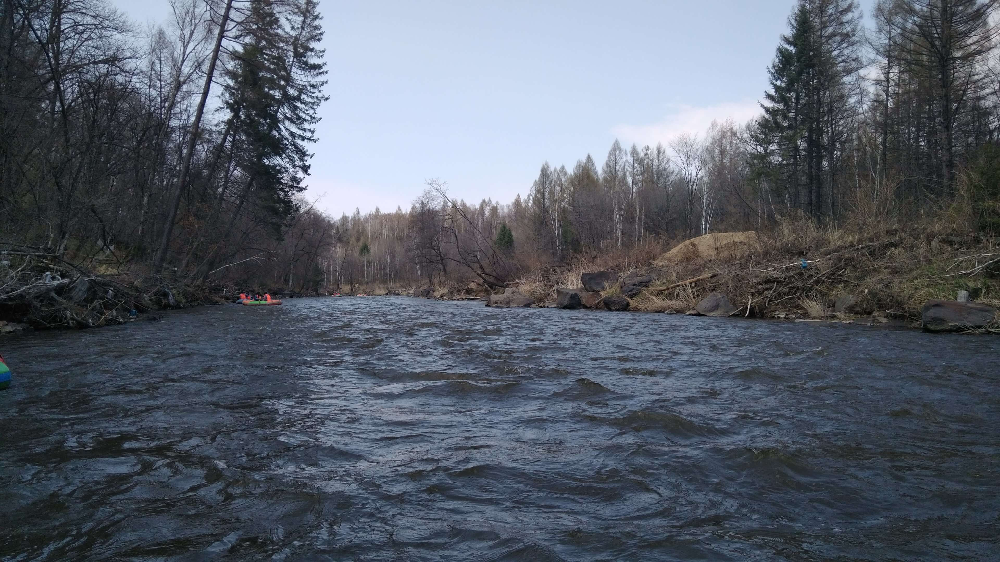
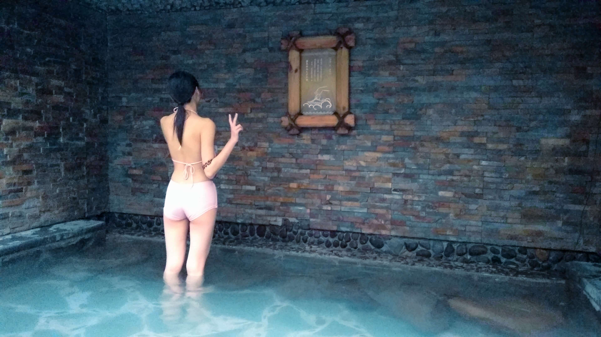
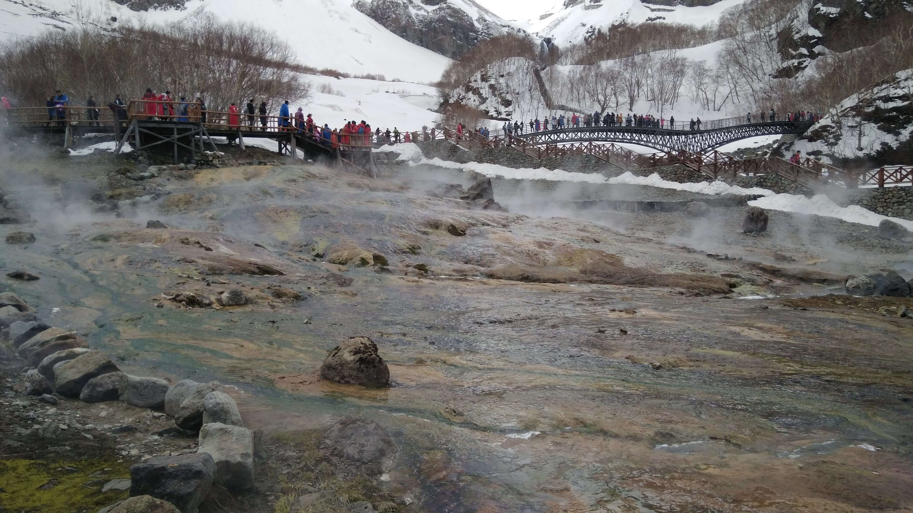
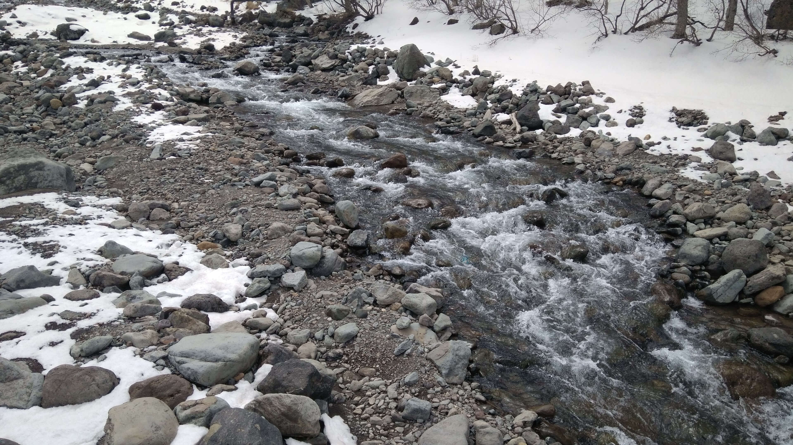
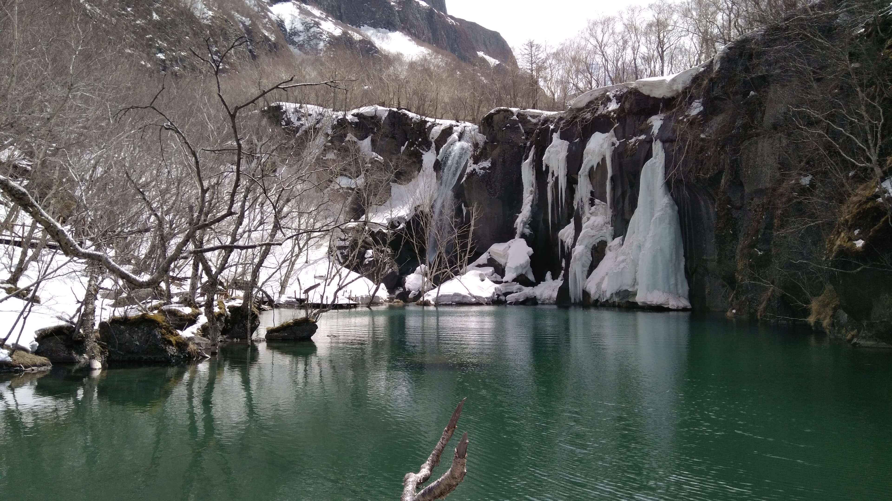
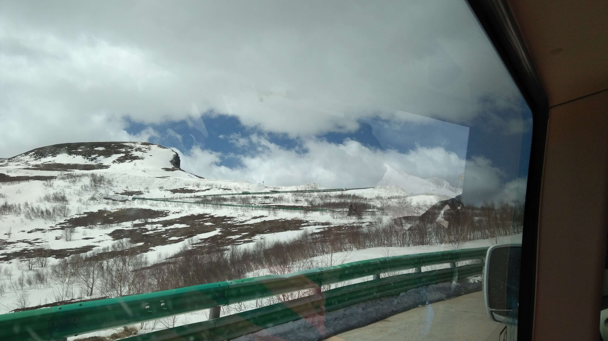
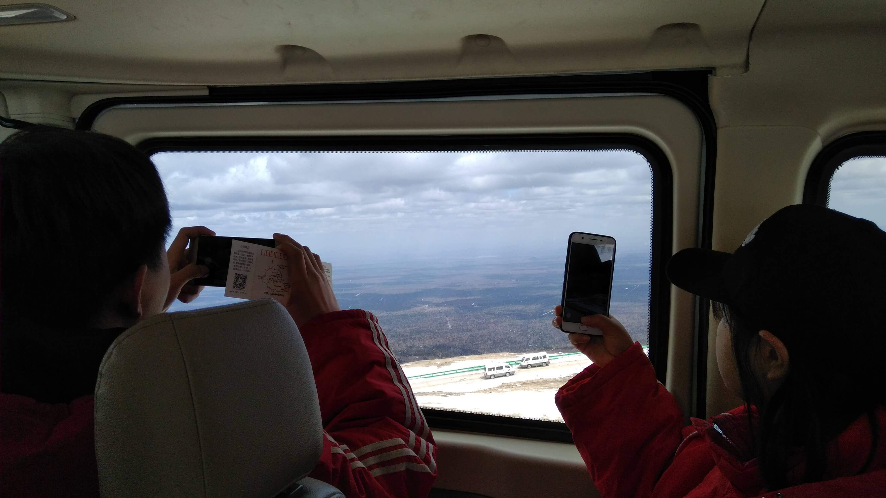
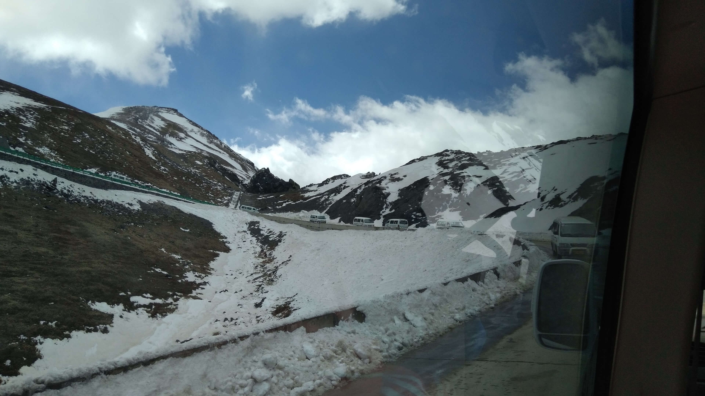
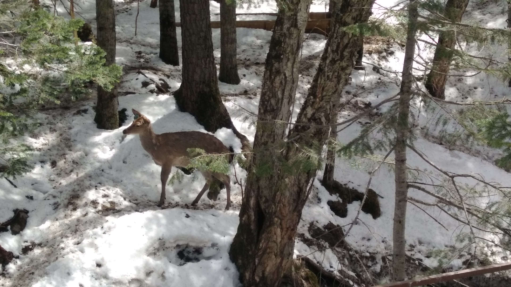
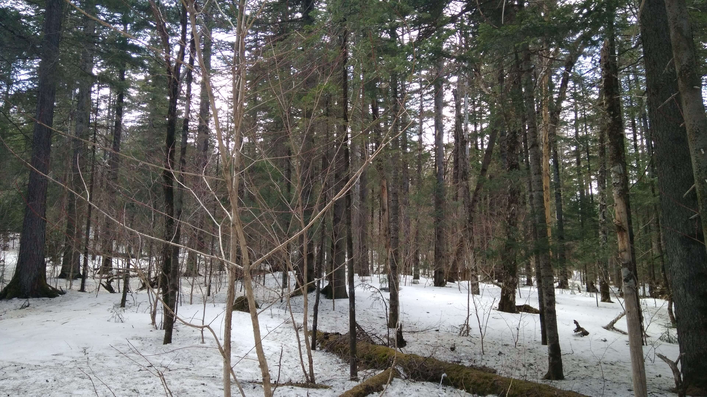

出游啊出游
一次有计划的出行
回想一下，之前自己的出游经历，还真的没有过像这次一样，早早就准备定好。之前的出游，基本就是一个人突然的临时想法，说走就走。而这次长白山之行，可以说从刚来东北就有期待。
大概是在小半个月之前，在朋友圈里看到谁转发了这次出游活动————长白山之行。其实在去年就有要去长白山游玩一次的想法，无奈上半年太多事忙得要死，下半年说走就走的去了北京，之间之后也没有什么好的机会能去上一次。
所以啦，这次就补上之前的遗憾，而且这次团队出游都是长春本地大学的学生，路上一起也会尽量避免一些代沟带来的尴尬，之前几乎都是自己出游也正是担心这个问题。
其实对长白山一无所知
西上太白峰，夕阳穷登攀。太白与我语，为我开天关。愿乘泠风去，直出浮云间。举手可近月，前行若无山。一别武功去，何时复见还。
----李白 《登太白峰》
可以说之前我对长白山其实是一无所知，除了知道山上有个神奇的天池，多么多么漂亮。以及新闻里各种对假期景点的报道镜头之类的。
长白啊常白
过这么长的漂流从没玩
第一站，长白山附近的一个漂流。说起漂流，我本身是拒绝的，几乎是个有山有水的景点都有漂流，又总是玩的一身湿漉漉。但被带队的老哥一阵安利，五公里超长漂流，河道风景极佳之类的，最终还是上了漂流船。

多亏身上套了劣质防水塑料布，也没有搞得一身湿，，水流有缓有疾。只是沿途风光一般，大概没到季节，而且河岸还处于开发阶段。说实话，感觉全国的景点，漂流项目的体验基本没有什么差异，不过这里的漂流是真的好长，以至于半道我都以为完事了，一阵扑腾坐湿了屁股……
感觉和澡堂没差的温泉
没有泡到山上的天然温泉（反正要很贵的吧），而是在山脚下的一个温泉，感觉其实就是澡堂。如果非要和澡堂区分一下的话，不过是能换个泳装露天泡澡吧，再加上男女混浴卖点十足，奔着对妹子和泳装地方旅游行业的支持，很勉强的选择消费一波，很勉强的。

其实泳装中年老男人和大妈也不少，而你想看到的，可能需要一些缘分，啊哈哈哈……
第二天一早观光长白山
其实这个季节还真不适合上山，尤其是昨天还因为大雪封山，主峰也上不去。所以这次有将近一小半的景区没有游玩到，想想还是挺遗憾的。
长白瀑布


绿渊潭

主峰&天池
能在封山这么多天后上主峰也算是很幸运啦。
主峰是坐车上去的，这真的是本次旅行中印象最深刻的体验了。在高耸入云的环山路上，神乎其技的老司机们开着车，九曲十八弯，坐在车上有种坐飞机的错觉，恐高的话真不敢往车窗外望一望。


窄小的车道上，老司机们如此镇定，而且全程速度都不慢，着实刺激。

到了主峰山上，海拔两千多米，真是瞬间回到了冬天，而且冷风吹的很厉害。天池也被冰封，覆盖着皑皑白雪，下面这张照片真的是天池……
地下森林
地下森林有多长，反正真的很长，我甚至没能走到一半就放弃继续向前了。如果不是饿了的话可能还是会坚持走到尽头吧……

这个季节的林子，就是林子林子林子还是林子这样的风景。

一次不错的快速旅行
略微不足的就是，抱团旅行还是会受到很多集体条件的限制，所以游玩时间显得太少了。长白山一行算是忙中偷闲，能出们看看风景也是假期最有意义的活动了。
总结下来，来长白山游玩的话最好在六月份到九月份左右，不过赶在假期的话人也会更多。避开一些不太紧要的项目，或者留点时间在山脚下歇息歇息。驴友组团会有更多方便，不然排队的时候可能会无聊死。
最后，希望在合适的季节再来一次。